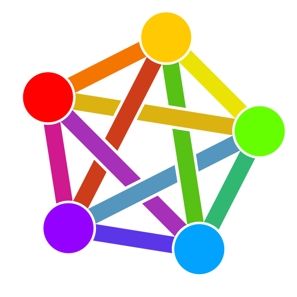

Functional Kotlin
About Me
John Burns
Staff Engineer @ GrubHub
CKUG Co-Organizer
 @wakingrufus
@wakingrufus
 @wakingrufus@bigshoulders.city
 wakingrufus
wakingrufus
- Fully Remote and Hybrid Remote Roles
- Unlimited PTO
- 8-16 weeks of parental leave
- 4.5 day work week
About You
Experienced with OOP Java
Experienced with Functional Programming
Experienced with Kotlin
Experienced with FP + Kotlin
What is Functional Programming?
What is Functional Programming?
Similar Principles as OOP
- Encapsulation
- DRY
- GoF Design Patterns
- Favor composition over inheritance
What is Functional Programming?
Differences from OOP
- Verbs vs Nouns
- Limit mutable state
What is Functional Programming?
What is a functional language?
- Java and Kotlin are multi-paradigm
- real world projects are rarely pure OOP or FP
- Kotlin gives us more FP
What Makes Kotlin more "Functional"?
- Immutable Data
- "First-class" Functions
- Pure Functions
- Higher Order Functions
Immutable Data
- Thread safe
- Avoids temporal coupling
- No need for defensive copies
- Helps prevent side effects
- Easier to cache
Immutable Data
data class ImmutableDataValue(val stringData: String)
First-Class Functions
- Classes are nouns
- Methods are verbs
- Functions are verbs and gerunds
- Kotlin has first class functions
- Static methods and functional types not needed
First-Class Functions
fun bigDecimalEquals(one: BigDecimal, two: BigDecimal) : Boolean {
return one.compareTo(two) == 0
}
fun bigDecimalEquals(one: BigDecimal, two: BigDecimal) : Boolean
= one.compareTo(two) == 0
val bigDecimalEquals: (Int, Int) -> Boolean
= { one, two -> one.compareTo(two) == 0 }
Pure Functions
- Deterministic: Same inputs will always yield same outputs
- No Side-Effects: Do not access or mutate shared state
Pure Functions
Non-Deterministic
data class ChatMessage(
val user: String
val timestamp: Instant
val message: String)
fun newMessage(message: String) : ChatMessage {
return ChatMessage(
user = System.getProperty("user.name"),
timestamp = Instant.now(),
message = message)
}
Pure Functions
Deterministic
data class ChatMessage(
val user: String
val timestamp: Instant
val message: String)
fun newMessage(
message: String,
user: String,
timestamp: Instant) : ChatMessage {
return ChatMessage(
user = user,
timestamp = timestamp,
message = message)
}
Pure Functions
Side Effects
fun addNewMessageSideEffect(messages: ArrayList<ChatMessage>,
newMessage: ChatMessage) {
messages.add(newMessage)
// Modifies input
}
val externalMessages: List<ChatMessage> = ArrayList()
fun addNewMessageSideEffect2(newMessage: ChatMessage) {
externalMessages.add(newMessage)
// Modifies something outside of scope
}
Pure Functions
No Side Effects
fun addNewMessage(
messages: List<ChatMessage>,
newMessage: ChatMessage) : List<ChatMessage> {
return listOf(*messages.toTypedArray(), newMessage)
}
Higher-Order Functions
- Take a function as an input
- Return a function as output
Higher-Order Functions
fun twice(f: (T)->T) : (T)->T = f(f(it))
fun f(x: Int) = x + 3
{
println(twice(::f)(7)) // prints "13"
}
Higher-Order Functions
Common Examples
- Kotlin Scope Functions
- Collection Operations (map, filter, etc)
- Memoize
- Lazy delegate
Kotlin Scope Functions
| Function | extension | this or it | Block return |
| let | yes | it | yes |
| run | yes | this | yes |
| run | no | -- | yes |
| with | no | this | yes |
| apply | yes | this | no |
| also | yes | it | no |
Types
- Nullability
- Sealed Classes
- Pattern Matching
Types
Monad
- Higher-order function as an object
- Composable
Types
Optional
final var opt = Optional.ofNullable(...);
opt.isPresent(); // true or false
opt.or(fallback);
opt.map(String::length).orElse(0);
val opt: String? = ...
opt != null
opt ?: fallback
opt?.length ?: 0
Types
Either
sealed class Either<A, B> {
class Left<A, B>(val value: A) : Either<A, B>()
class Right<A, B>(val value: B) : Either<A, B>()
}
val e : Either<String, Int>
when(e){
is Left -> e.length > 2
is Right -> e > 2
}
Types
Try
sealed class Try<A> {
class Success<A>(val value: A) : Try<A>()
class Failure<A>(val ex: Exception) : Try<A>()
}
fun <A> doTry(work: () -> A): Try<A> {
return try {
Try.Success(work())
} catch (e: Exception) {
Try.Failure(e)
}
}
val result = doTry { "" }
when (result) {
is Try.Failure -> result.ex
is Try.Success -> result.value
}
Types
Other
- Java's CompletableFuture
- ArrowKt's IO
- Validated
- Collections
Railway-Oriented Programming
Monad Chains
fun <A, B> Try<A>.andThen(next: (A) -> B): Try<B> {
return when (this) {
is Try.Success -> doTry { next(this.value) }
is Try.Failure -> Try.Failure<B>(this.exception)
}
}
val result = doTry { "" }
.andThen { it.length }
.andThen { it + 2 }
.andThen { it < 0 }
when (result) {
is Try.Failure -> result.exception
is Try.Success -> result.value
}
Railway-Oriented Programming
Monad Chains
fun myFunct1(s: String) : Try<Int> = doTry { it.length }
fun <A, B> Try<A>.andThen(next: (A) -> Try<B>): Try<B> {
return when (this) {
is Try.Success -> next(this.value)
is Try.Failure -> Try.Failure<B>(this.exception)
}
}
val result = doTry { "" }
.andThen { myFunc1(it) }
when (result) {
is Try.Failure -> result.exception
is Try.Success -> result.value
}
Testing with Ad-Hoc Polymorphism
DSLs in Kotlin
More Resources
- Using Ad-hoc Polymorphism to Test Functional Kotlin - Me
- Static Web Development with Kotlin DSLs - Me
- Railway oriented programming
- Objects Should Be Immutable - Yegor Bugayenko
- The Value of Values - Rich Hickey
- Functional Core, Imperative Shell - Kasper B. Graversen
- Coping with Kotlin's Scope Functions - Simon Wirtz
https://wakingrufus.github.io/kotlin-2022/
 @wakingrufus
@wakingrufus
@wakingrufus@mastodon.technology